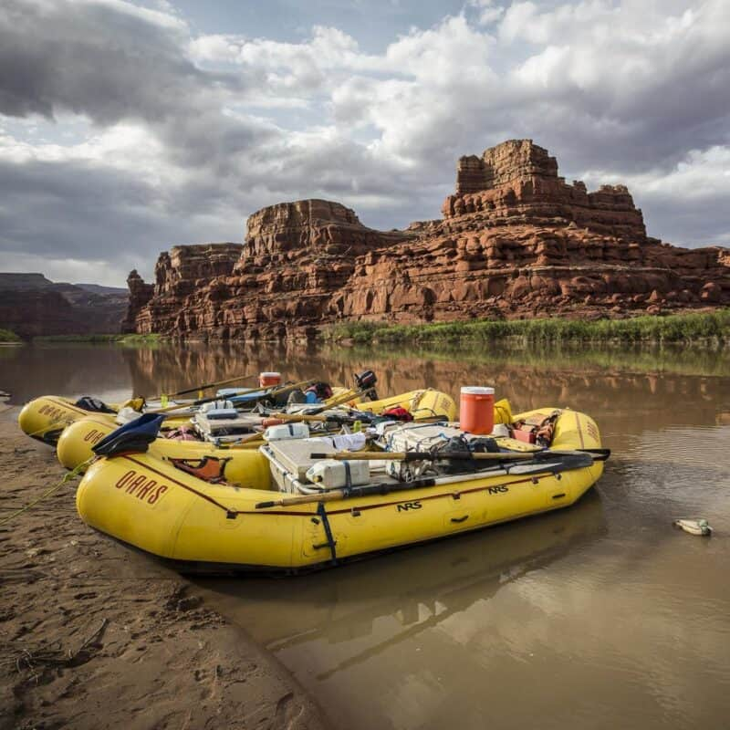

Idaho

Has more miles of whitewater than any other state in the country. So, it should come as no surprise that OARS offers a wide variety of river trips for first-timers, intermediate, and experienced paddlers. Most Idaho rafting trips are appropriate for children as young as 7 years, but more experienced adventurers will not be disappointed with long stretches of Class III whitewater and abundant hiking and fishing opportunities on all of our Idaho rafting trips.
Oregon

From sunset gourmet dinners along the Rogue River to the remote rapids of the Owhyee, join OARS for an unforgettable Oregon rafting adventure. The state leads the nation with more than 50 designated Wild & Scenic Rivers.
Utah

Whether you’re looking for a memorable family adventure, the rush of whitewater, or the solace of nature, you’ll find it all on an OARS river rafting adventure in Utah. With outposts in Vernal and Moab, OARS offers an unbeatable selection of rafting trips on the Yampa, Green, San Juan, and Colorado rivers. From the big water of Cataract Canyon to the splashy fun of Flaming Gorge, OARS specializes in high-quality river trips meant for every level of adventurer.